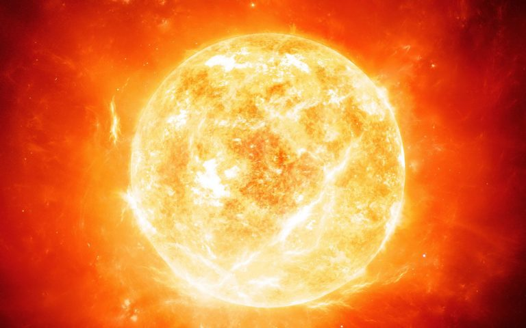

‘The Head of The Family’ you must be thinking who is he? And why it is called the head of the family?
As you know ahead is a person without which nothing works So, in our family (solar system) sun (A extremely hot star present in the middle of the solar system) is the head
do you know why because the sun plays a very important role in our solar system You must be thinking how? Let’s see how: -
· It gives warmth to us (especially in polar regions)
· It is the reason we get oxygen (plants can’t do photosynthesis without the sunlight which comes from the sun)
· With its gravitational forces, it makes all the planets move around him (without him our earth and other planets will float continuedly in our space till it gets another star like the sun)
· There will be all dark (even the moon will not shine because it gets its shines from the sun)
· The whole earth will freeze
Facts about sun
* Nature has given earth the best position because if our earth would be a bit close, we would all be burned in a fire and if a bit far then we will get freeze forever
* Your mom or dad must have said you do not look at the sun directly and you must be confused why to let me give the answer – The Sun is extremely hot near about 21 crore Celsius unimaginable right
* Our sun is so huge that 31 lakh earth can fit inside it and still some space will be left
* Sun was worshipped and is even worshipped today by few people
* Sun too has an atmosphere known as the corona
* Sun also spins in its orbit
* In ancient times the sun was known as a planet but after the great Galileo Galilei an Italian scientist who was the first one to study the sun declared the sun as a star